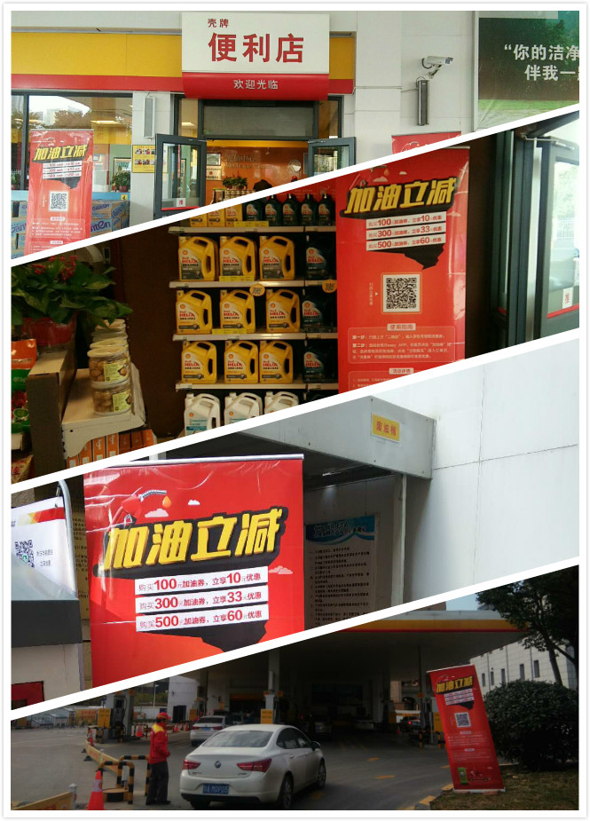
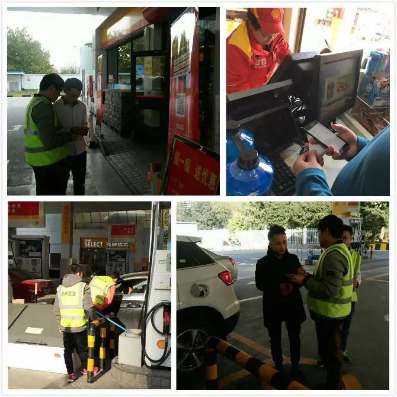

“先生，您好！优驾行很高兴为您服务，请您扫码，今天加油能省60块……”这是优驾行easy的地推人员在礼貌热情地向前来加油的车主推荐APP的“加油立减”活动。
从11月27日开始，我司核心产品——优驾行easy APP的加油业务地推活动正式开始，目前已在明光路、丈八四路、长安南路等几个延长壳牌加油站陆续开展，服务范围将覆盖西安市内首批安装扫码枪的34个加油站点。

地推现场无处不在的活动物料
这次地推活动由我司平台运营部、加油业务部、产品策略部、汽车交易部、汽车金融部、设计部、人事行政部等多部门联合运作，形成一个大Team按照流程各司其职、紧密配合。
每个地推加油站安排了1名我司员工与2名兼职人员，每名地推人员在进驻站点前都在公司经过了严格的业务培训，明确了活动的规则和亮点，将地推的礼仪和规范熟记于心。我司员工负责现场管理督导，遇到问题第一时间解决，一时解决不了的问题则汇总反馈到公司相关部门协调解决。大家一起合力将地推工作在正确的轨道上顺利推进。
运营部的小魏连续几天坚守加油站，问他最大的困难是什么，他不好意思地笑笑，吐出一个字：冷。是的，地推工作不分节假日，更不管天气冷暖。他们身着统一定制的反光衣，驻守在加油站的各个角落，主动寻找机会向车主介绍APP优惠加油服务，不厌其烦地解答车主的疑问，手把手地教车主在手机上领取加油优惠券，在寒冷的冬日，从白昼到夜幕降临。

地推人员引导车主扫码领取加油优惠券
我司优驾行easy APP的加油业务自上线以来，一直秉承着“线上+线下”两条腿走路的推广模式。线上多媒体传播总动员，线下在各加油站铺设宣传物料，与终端服务人员和车主进行真实有效地接触，不遗余力地进行实效拉动，将西安作为样本城市集中力量做透，并逐步向周边城市乃至全省扩展。